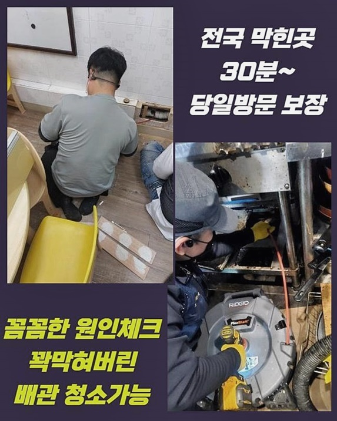
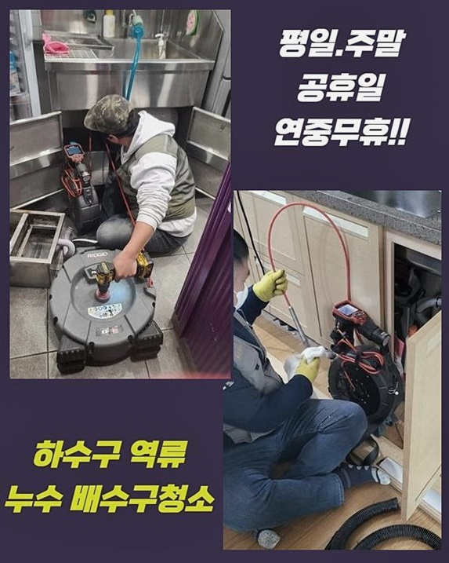
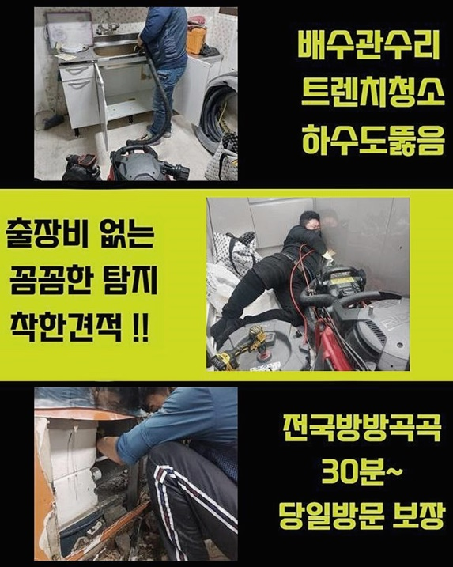
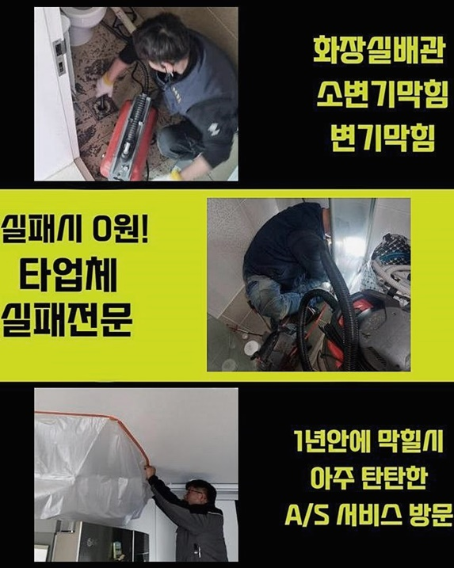
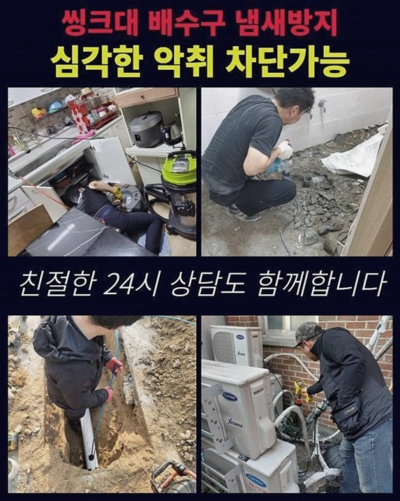
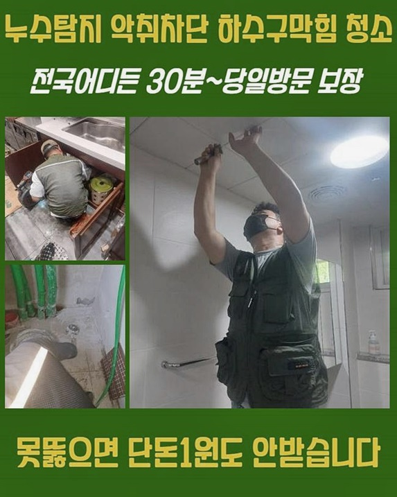

🏠 용인 동부동변기뚫음 모현면 배수로뚫기 수리업체
용인 싱크대막힘 전문 시공 후기

📋 작업 개요
- 위치: 용인
- 서비스 유형: 싱크대막힘, 변기막힘, 하수구막힘, 배관막힘, 뚫는업체, 배관청소, 고압세척
- 작업 일시: 2024. 8. 1. 19:42
- 업체명: 하수구수사대 (010-5615-2118)
🔍 문제 상황
용인 동부동변기뚫음 모현면 배수로뚫기 수리업체
하수구가 막혔을때 어떻게 조치하는것이 좋은지 작업해드렸던 수리사례를 토대로 알려드리려고하니 꼼꼼히 읽어보시면 많은정보를 얻으실수있어요!
얼마전에 방문한사례로 주방부엌쪽에서 배관막힘문제가 발생한일이 있었어요
싱크대는주로 기름이물이 쌓이고쌓여 막히는일이 발현되는데 저희의경우 배관안쪽을 확실하게점검해 막힌이유가 뭔지 알아낸뒤 해결해드린답니다
현장을살펴보니 좋지않은 냄새도 발생했으며 물사용까지도 어려웠죠
이런경우엔 하수관에 이물이퇴적되서 물이정상적으로 흘러가지않는것으로 보였답니다
막히는문제들을 빠르게 해결해드리기위해 최선을다한 작업으로 진행해볼 예정이에요
오염물제거를 통하여 하수구문제를 바로잡고 고객분의 불편함을 타파시킬게요!
고압세척기계는 높은압력의 물을쏘아서 이물질들을 없애기때문에 확실한 하수구세척이 가능하겠습니다
이물이축적된 배수관을 말끔하게 세척하기위해 이용되는데 앞서말씀드린 장비의경우 배수관환경에서 발생할수있는 정체문제들을 해결해보는데 효율적이에요
하수구세척을 진행하게될때 주변환경에 피해받지않게 비닐류를써서 피해받지않도록 예방해드리고있어요
이렇게 고압세척의 기술력을 통하여 하수구의성능을 유지시키고 안전히 운행되기까지 기여하고있죠
배수관은 각기다른 지점에 설치되어있지만 이어져있으므로 막히는문제가 종종일어나죠

🔎 원인 분석
💡 전문가 진단: 정밀 진단 장비를 사용하여 슬러지의 고착 여부를 판명하고 타격/세척 작업을 실시했습니다.
배관입구쪽을 살펴봤더니 모발들과 각종이물이 퇴적되어있는걸 살펴볼수있었죠
이러한경우에는 배관카메라를 활용해 확실하게 점검해봐야해요
메인관은 물길쪽이 어느정도만 뚫려있는 모습이었지만 공간이부족하여 배수상황에 영향을입히고 있었답니다
전체적으로 점검해본결과 간단한 오염물파쇄 기계보단 고압청소기가 효과적일것으로 판단되었어요
의뢰자분께 의견을구한뒤 신속하게 세척을 시작할수있었죠
배관cctv를 활용해서 하수도안쪽을 확실히 체크해볼수있죠
이물로인해서 배관이막히면 스케일링과정이 필요한데요
이물제거과정을 잘못하여 진행하게될경우 하수구안속에 파손이일어나고 결국에는 심각한경우로 이어질수가있죠
현장경험이 풍부한 전문기사들이 현장을 방문하여 검수과정을 수행하다보니 손상문제로 인한 염려하실 필요가없어요
석션기의경우 이물을빨아들여 소거하는 장비인데요
이를통하여 내부속에있는 이물을 제거시키고 문제가무엇인지 간략하게 알아낼수있어요
샤프트기는 오염물을 분해시키고 굳은이물을 제거해내는데 사용되고있습니다
그후에는 내시경점검으로 내부상태를 파악하여 적절한대처를 진행하면됩니다

🔧 작업 과정
내시경장비로 진행하는과정은 막혀있는이유를 알아내기위해 거쳐야되는 과정인데요
내시경작업을 진행해보니 막힌까닭이 이물질로인해 발현되었다는것을 알아낼수가 있었습니다
내시경장비끝에 작은촬영기가 달려있다보니 사람의눈으로 살펴볼수없는 장소에 활용하고있죠
막힘현상이 나타난곳과 잔해물의 형태가어떤지 확실히 살필수가있어요
점검과정을 통해서 어떻게 작업할지에 대한 도움이됩니다
그렇기때문에 배관막힘이 발발되었다면 하수구촬영기를 투입하여 자세하게 검사하는것이 중요사항중 하나라고할수있죠
이물을 제거하고자 전문장비를 구비하여 배관내부에있는 오염물들을 처리해보려고해요
한번더 말씀드리는것으로 분쇄장비끝에 회수용오거가 빙빙돌며 하수구안쪽의 석회물들을 갈아내줘요
저희들의경우 작업방식을 투명하게 공개하여 고객분들이 작업과정의 필요성에대해 파악하고 믿음이가도록 노력하고있어요
하수구작업에 착수하게될때 전문지식을 갖추고있지 않다면 오히려하수관에 크랙을 발생시킬수있으므로 조심해주셔야해요
전문기사를 호출하면 별탈없이 풍부한 현장경험을 토대로 문제가처리되면 손상우려없이 마무리될거에요
다음장소로는 욕실배관에 문제가나타난 장소를 방문해봤어요
이번현장도 이물들이 쌓이고쌓여 막혀버리게한 현장이었어요
분해전용장비 샤프트설비를 이용하기로 결정했어요
악취현상도 보였으므로 하수도물길을 확보해 뚫는작업에 착수해보기로 했답니다
가장효과적인 작업이이루어짐을 기대할수가 있었는데요
오랜기간 축적되어있는 이물이 배관안에 쌓이고쌓이면서 막힘이 일어난것을 파악했죠
여러번 말했지만 작업숙련도를 갖추고있지않으면 어떤문제로인해 배관시스템이 무너진건지 확실히 판단할수없죠
그러므로 저희같이 전문업체의 도움을 받아보셔야해요
빠른시일안으로 배관문제를 바로잡아 쾌적한환경으로 제공해드릴것을 약속할게요
재발문제로 곤란하지않게끔 예방조치까지 취하도록 하겠습니다


✅ 작업 완료
고객의만족을 가장우선으로 두는 써비스를 보여드리겠습니다
깔끔한 하수구로 유지해드리고자 성심성의껏 작업할게요
조치를취하지않고 방치한다면 또다른피해가 일어날수있사오니 막힘징조를 보일때 대처해보세요!
전국어디든지 1시간안으로 방문이가능하며 전문적인 기기까지 소유하고있으니 언제라도 전화만주시면 되겠습니다
이밖으로도 궁금증이 풀리지않으신게 있다면 편안하게 의뢰주시면 상세하게 상담진행하도록 할게요!
하수구가 막혔다면 저희들과같이 해결해봅시다!저희와같이 잡아나가봐요




⚠️ 주방 싱크대 배관 막힘 예방 수칙
- ✅ 기름기가 묻은 식기나 프라이팬은 설거지 전 키친타올로 반드시 기름때를 닦아내세요.
- ✅ 주기적으로 싱크대 개수대에 뜨거운 물을 가득 받아 한 번에 내려 배관 내부 기름을 씻어내세요.
- ✅ 배수구 거름망을 미세한 필터로 사용하시고 음식물 찌꺼기가 틈으로 새어 들지 않게 관리하세요.
- ✅ 베이킹소다와 식초를 뜨거운 물과 함께 일주일에 한 번씩 부어주면 배관 살균과 막힘 예방에 좋습니다.
💡 핵심 정리
- 확실한 장비 작업(내시경 점검 및 샤프트 스케일링)으로 원인을 뿌리 뽑습니다.
- 작업 후 1년 이내에 동일한 부위 재발 시 100% 무상 A/S 서비스를 보장합니다.
- 서울 · 경기 · 인천 전 지역에 24시간 언제든 긴급 출동할 수 있도록 항시 대기 중입니다.
❓ 자주 묻는 질문 (FAQ)
🚨 용인 싱크대막힘 문제로 고민이신가요?
정확한 원인 진단과 확실한 시공으로 재발 없는 해결을 약속드립니다.
24시간 긴급 출동 | 서울 · 경기 · 인천 전지역 | 1년 내 재발 시 무상 A/S